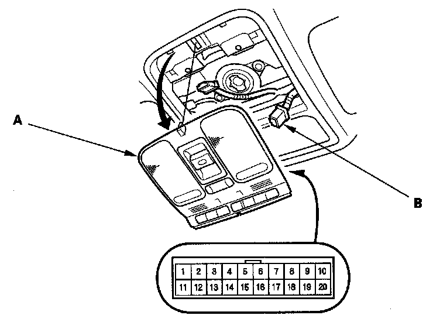
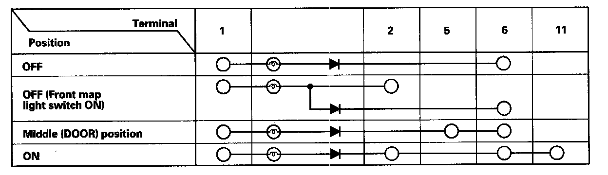

Interior Light Switch Test/Replacement
Interior Light Switch Test/Replacement
1. Carefully pull down the roof console (A).
2. Disconnect the 20P connector (B) from the roof console.

3. Check for continuity between the terminals in each interior light switch position according to the table.
NOTE:
- Before testing, check the front individual map light bulb(s).
- When check for continuity across the diode, use the diode setting (->|-) on the digital volt/ohm meter to check the diode bias.
4. If the continuity is not as specified, replace the roof console as an assembly.